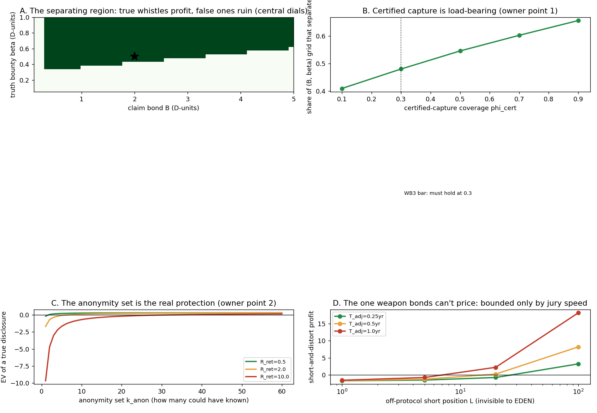

In plain language
Companion to RESULTS - v39.0 The Whistle Market.md. July 18, 2026. Jargon-compliant from birth per the house rule. Every number traces to results_v39.json; this is a model of the design, not a forecast.
The question
The owner asked: could EDEN be the best whistleblowing tool ever built? People could review companies that never joined, and employees could anonymously share proof of wrongdoing — permanent, unburiable, and paid. This simulation tested whether that market can be built so the incentives point the right way: telling the truth pays; lying costs you. It also tested the weapons the same tool hands to bad actors, and it folded in two refinements the owner added when reviewing the concept — both of which turned out to be structural.
How the market works (the design under test)
Anyone can file a conduct claim about any organization — inside EDEN or not — under their pseudonym, attaching evidence, and posting a bond (a deposit you lose if the claim is judged false). The accused gets a window to answer — without having to join EDEN. A citizen jury (EDEN's existing lottery-selected, country-capped jury machinery) rules: substantiated, unsubstantiated, or unverifiable — an honest third verdict meaning "we can't tell," which returns the bond minus a small fee rather than punishing anyone. Substantiated truth earns the bond back plus a bounty; a judged-false claim forfeits the bond. Everything filed is permanent: it can be answered and refuted forever, but never quietly deleted.
What we found, in plain terms
1. The market works, with room to spare. Across more than half of all the bond-and-bounty settings we searched, the two conditions hold at once: truth-tellers come out ahead and liars come out behind. And it isn't fragile: the incentives stay pointed the right way even if juries misjudge claims at rates far worse than any real jury should (up to ~64% error tolerance — the deposit asymmetry does most of the work, since truth usually gets its deposit back and lies usually lose it).
2. Two of the obvious weapons kill themselves. Flooding the system with false accusations loses money on every single claim (−1.6 units each at the central setting). Extortion — "pay me or I file" — is an empty threat, because filing a false claim costs the extortionist money, and withdrawing a threat leaves a permanent record of having made it.
3. The owner's recording idea (transparent capture) turned out even better than expected. The owner argued that a fully transparent recording stack — open software everyone can verify, hardware that can't alter what it captures, files that go straight into EDEN unchanged — is the closest thing ever built to answering "is this accusation true?" The simulation agrees, with a precision worth keeping: certified capture doesn't make the market possible (to our surprise, even a market running on ordinary uncertified evidence separates truth from lies — the bond-and-jury machinery is that robust). What it does is make the market strong: it removes the "is this footage real?" doubt entirely, leaving juries only the question "does this real footage prove the claim?" — and it's the insurance policy against a future where AI-forged documents get better and better, because you cannot forge a certified capture without staging reality itself. Translation: the market can launch before the special hardware exists everywhere, and gets safer as it spreads.
4. The owner's one-of-three point is now the market's central security property. The owner pushed back on the "if only three people knew, you're exposed" worry: the employer may suspect all three, but proving which one requires real-world investigation — inside EDEN, nobody can tell whose account it was. The simulation formalizes exactly that: the discloser's protection is the anonymity set — how many people could have known. The results: with typical retaliation stakes, disclosures are rational when about 7 or more people knew; when retaliation is cheap, even 2 suffices; when retaliation is ruinous (career-ending), you need ~32, and a scorched-earth employer who punishes everyone in the set pushes it to ~20 regardless. About 55% of modeled would-be truth-tellers clear the bar. And the deep point: all of this works only because the platform can never confirm which account it was — if EDEN could be forced to tell, the anonymity set wouldn't matter and the market would collapse to the fearless. So "the platform cannot confirm, by architecture" gets written into the rule set as a security invariant, not a privacy courtesy.
5. One weapon survives, and we name it rather than hide it. A trader who secretly bets against a company outside EDEN (a "short" position — profiting when the stock falls), then files a false claim to drive the price down, can profit if the position is big enough — because EDEN cannot see outside trading books, no bond can be sized to the real stakes. The only protocol-side defense is speed: the faster juries rule, the smaller the window the lie can profit in. The rest is a handoff to securities law, which is the institution that exists for exactly this. Honest bound, not a fix.
6. Sponsors (someone else posts your bond) matter less than expected — because fear, not money, is the wall. We expected bond-sponsors (a newsroom or union underwriting a poor discloser's deposit) to be important. At sensible bond levels they're not — the deposit risk on a true claim is small, so giving a sponsor half your bounty costs more than it saves. Sponsors only become essential if bonds are set high, where they resurrect disclosers who'd otherwise be priced out entirely. Design conclusion: keep bonds low (the math allows it), and what stops people isn't money — it's retaliation fear, which is priced by the anonymity set above, and no bounty in our search rescued the three-people-knew case against a ruinous retaliator. We say that out loud instead of promising otherwise.
7. The double edge is real and now has a name. The same capability that could be EDEN's strongest "why join" story is also the likeliest reason a powerful coalition would try to kill the platform — not because the market fails, but because it works. That failure mode ("the leak that got it banned") was missing from the project's pre-mortem and has now been added as obituary #7, with the staging implication: this feature should roll out governance-gated, not day-one.
The bottom line
Yes — the whistle market can be built so truth profits and lies cost, on rails EDEN already has (bonds, juries, provenance, permanence, pseudonymity). The owner's two refinements shaped the result: transparent capture is the market's armor (and its anti-AI-forgery insurance), and platform-silence-about-accounts is its foundation. Two limits get named in public rather than papered over: small-circle whistleblowers facing ruinous retaliation are still taking a real risk no bounty fixes, and short-sellers weaponizing false claims are bounded only by jury speed plus outside law. What nobody gets to say yet: "best whistleblowing tool there is" — what the evidence supports is narrower and better: a market where telling the truth pays, lying costs, and the two things it can't fix are named on the label.
Words used here (quick reference)
Conduct claim — an accusation of wrongdoing filed about any organization, with evidence attached. Bond — the deposit a filer posts, forfeited if the claim is judged false. Bounty — the reward paid when a claim is substantiated. Unverifiable — the honest third verdict: "we can't tell"; bond returned minus a fee, nobody punished, record kept. Certified capture — recording through a transparent, community-verifiable software/hardware stack that cannot alter what it sees; makes "is this footage real?" a solved question. Interpretation error — the jury mistake that remains even with real evidence: does authentic footage actually prove the claim? Anonymity set (k_anon) — how many people could have known the disclosed fact; the discloser's real protection, since suspicion divides across the set and EDEN never confirms accounts. Retaliation cost (R_ret) — what being punished would cost the discloser (a nuisance, a job, a career). Bond sponsor — a third party (newsroom, union) that posts the bond for a share of the bounty. Short-and-distort — betting against a company outside EDEN, then filing a false claim to move the price; the one attack bonds can't size against, bounded only by jury speed. Separating market — one where the honest choice and the dishonest choice have opposite signs: truth profits, lies lose. D-unit — the standardized value of one substantiated claim; all bonds/bounties are measured in it.
Written July 18, 2026 (Fable 5, owner-directed). Honest limits: jury error rates, retaliation costs, and forgery rates are dials a pilot must measure; content-based unmasking is beyond any protocol's reach and modeled honestly as suspicion; the platform's own legal exposure for hosting leaks is a scenario, not a model. Status: DR-22, PROPOSED — evidence in hand, awaiting owner ratification.
Figures

Technical results
Run: July 18, 2026. Spec: v39 SPEC - The Whistle Market (registered).md — bars WB0–WB6 fixed before code, with two owner refinements registered as model structure (certified capture splits jury error into authenticity vs interpretation; the anonymity set k_anon is the discloser's real protection, since the platform never confirms accounts). Engine: whistle_market_sim.py (deterministic; RNG = the k_anon/R_ret population draws, seeds 7 + 11; import-guarded; anchor values LOADED from the committed results_v7.json at runtime — sha256 recorded — no transcribed constants, per VERIFICATION v6 D1). Committed: results_v39.json, fig_v39_whistle_market.png. Every number below traces to the JSON. Produced by Claude Fable 5, owner-directed [FABLE] cell.
Verdict in one line: the whistle market separates — a wide (bond, bounty) region exists where true disclosures profit and false ones ruin (54.6% of the searched grid at central dials; the market tolerates interpretation error up to ε* ≈ 0.64, far beyond any plausible jury), false-claim flooding and extortion are priced out at the central point (EV_false = −1.60 per claim) — and both registered safe-to-refute expectations were refuted in informative directions: bonded adjudication is so robust that certified capture is not needed for the market to exist (it widens the region and kills the authenticity/forgery channel, but even the stressed uncertified-only market separates), and bond sponsors fix nothing at the central bond (they halve the bounty against an unchanged fear cost — their real value appears only at high bonds, where they resurrect disclosers who were priced out entirely: k* None → 11). The two honest walls stand exactly where the owner's framing put them: fear is priced by the anonymity set (k* = 7 at central retaliation; 2 when retaliation is cheap; 32 when it's ruinous — and the platform's silence about accounts is what keeps k* finite at all), and short-and-distort is the one weapon bonds cannot touch (off-protocol position size is invisible by construction; profit grows without bound, bounded only by jury speed). 5/7 bars PASS; WB3 and WB4 FAIL as refuted registered expectations — the findings.
Bar summary (5 PASS; WB3/WB4 FAIL as refuted expectations, filed as findings)
| Bar | Registered | Measured (seed 7; seed 11 in JSON) | Result |
|---|---|---|---|
| WB0 anchors | v7 J-values loaded from committed JSON at runtime, sha256 recorded, no transcribed constants | J1 0.8053 / τ0 0.7787 / J3 1.0374 loaded; sha 86976fda… | PASS |
| WB1 separation (load-bearing) | non-empty (B, β) region with EV_true > 0 > EV_false; ε* delivered | 54.6% of grid separates; central (B=2, β=0.5): EV_true +0.070, EV_false −1.600; ε_int* = 0.639 | PASS |
| WB2 weaponization | flood priced out; extortion non-credible; short-and-distort expected irreducible | flood −1.60/claim; extortion threats empty (a rational victim won't pay when filing loses money); π_sd > 0 for large L at every T_adj — confirmed irreducible, bounded only by adjudication speed | PASS |
| WB3 certified capture load-bearing | holds at φ_cert ≥ 0.3 AND fails at 0.1 | holds at 0.3 ✓ — but also separates at 0.1, even under the uncertified stress combo (δ_auth 0.3 + ε_forge 0.2) | FAIL — refuted expectation (F3) |
| WB4 anonymity set + sponsor split | k* delivered; sponsors expected to help where bonds bind, hurt where fear binds | k* = 7 central (2 / 7 / 32 across R_ret; 20 under punish-them-all γ=3); population participation 55.5% / 55.9% (seeds); sponsors hurt at central even for uncertified disclosers (k* 10 → 11) | FAIL — refuted expectation, sharper finding (F4) |
| WB5 double edge | sensitivity table computes, monotone | V* table across a_u × h_p sweeps, monotone ✓ — feeds PRE-MORTEM obituary #7 | PASS |
| WB6 harness | byte-identical double run; seeds ≤ 3% rel | three byte-identical runs (2 dev + committed vault); seed gap 0.8% | PASS |
Findings
F1 — The market separates, with enormous room (WB1). At central dials, more than half the searched (bond, bounty) grid satisfies both conditions at once: a true discloser's expected value is positive and a false accuser's is negative. At the central point (bond 2, bounty 0.5, in units of one substantiated claim's public value): truth nets +0.07 after fear costs, lies lose −1.60. The boundary that matters most: separation survives interpretation error up to ε* = 0.639 — a jury that got four in ten judgments wrong would still leave the incentives pointed the right way, because the bond asymmetry (truth mostly gets its bond back; lies mostly lose it) does the work. The registered caveat stands: ε_int is a dial, and a pilot's real juries are the fact no desk run supplies — but the margin is wide enough that jury competence is unlikely to be the binding constraint. What is: F5.
F2 — Flooding and extortion die at the bond; the short is the survivor (WB2). Filing false claims costs −1.60 each at the central point — flooding is self-bankrupting, and "pay me or I file" is an empty threat against a rational victim (filing loses the extortionist money; withdrawing leaves a permanent record). The registered safe-to-refute expectation confirmed: short-and-distort is irreducible — a trader who shorts a target off-protocol and files a false claim profits whenever position size × pre-verdict damage × adjudication delay exceeds the bond, and EDEN cannot see off-protocol position size by construction. The deliverable is the honest bound: profit scales with T_adj, so fast adjudication is the only protocol-side lever (halving delay halves the weapon), with the rest belonging to securities law — the same handoff pattern as v38's off-protocol dividends.
F3 — REFUTED EXPECTATION (WB3): certified capture is not what makes the market exist — it's what makes it strong. The SPEC registered that separation should fail at 10% certified-capture coverage ("the market cannot run on unverifiable-provenance evidence alone"). It doesn't fail — even the stressed uncertified world (jury authenticity-doubt 0.3, forgery success 0.2) separates at every coverage level, because bonded adjudication with a 20–24% authenticity discount still leaves truth profitable and lies expensive. What certification actually buys, measured: it widens the separating region (more workable bond/bounty configurations), eliminates the authenticity discount (at full coverage the only residual error is interpretation — the owner's point 1, exactly), and caps forgery escalation (a certified-class fake requires staging reality itself — the analog-hole residual, 0.02 — where uncertified forgery rides document-faking rates that could worsen as AI fakes improve; ε_forge is a dial this cell holds fixed, and the certified channel is insurance against its drift). The owner's transparent-capture-stack instinct is validated as the market's robustness layer, not its existence condition — an even better position than registered, since the market can launch before certified-capture hardware is ubiquitous.
F4 — REFUTED EXPECTATION (WB4): the sponsor's limit is sharper than registered — and fear is the real wall. Registered: sponsors (who post the bond for a bounty share) help where bonds bind and hurt where fear binds. Measured: at the central bond, bonds bind almost nobody — a true claim's expected bond loss is small (mostly returned or fee-only), so the sponsor's 50% bounty cut buys almost nothing and k* worsens (7 → 10 blended; 10 → 11 even for fully-uncertified disclosers). The sponsor mechanism earns its keep only at high bonds with weak evidence — at bond 5, uncertified, the unsponsored discloser is priced out entirely (k* = None) and sponsorship resurrects them (k* = 11). Design translation: keep bonds low in the conduct-claim class (the separation region allows it) and sponsors become mostly unnecessary; if governance ever raises bonds, sponsor infrastructure becomes load-bearing for poor disclosers. The wall that remains is fear, and it's priced by the anonymity set (owner's point 2, quantified): k* = 2 when retaliation is cheap (0.5), 7 at central (2.0), 32 when ruinous (10.0), and 20 under a punish-them-all employer (γ=3) even at central cost. About 55% of the modeled discloser population clears the bar at central. No bounty in the searched range rescues the three-people-knew case against ruinous retaliation — the honest limit, held.
F5 — What the platform's silence buys (the owner's point 2, structural). p_susp = γ/k_anon is the whole retaliation model, and it exists because EDEN never confirms which account disclosed — the employer suspects the set, and narrowing it further requires off-protocol investigation the protocol never assists. If the platform could be compelled to confirm accounts, p_susp → 1 regardless of k_anon and the market's participation collapses to the fearless. This makes account-confidentiality a load-bearing security property of the whistle market, not a privacy nicety — worth stating in DR-22 as an explicit invariant (the platform cannot confirm, by architecture, not policy — rhyming with A5's "nothing biometric on-ledger, ever").
F6 — The double edge, sized as arithmetic (WB5). With adoption uplift linear in substantiated-leak volume and shutdown pressure convex in it, the net-exposure optimum V* moves proportionally with the uplift dial and inversely with the pressure dial (monotone across all nine sweep cells). This is assumption-arithmetic, not a forecast — its role is to make PRE-MORTEM obituary #7 concrete: the failure mode is not "the market doesn't work," it is "the market works so well that the platform's legal surface becomes the target before its defenses mature." Governance implication worth recording: the conduct-claim class is the one EDEN feature whose success rate is itself a strategic dial.
Honest limits
Reduced-form throughout, as registered: jury error, retaliation costs, forgery rates, and pre-verdict damage are dials, not measurements (ε_int and the retaliation distribution are pilot facts; v11 prices jury capture, not jury competence); content-based deanonymization is out of protocol reach and modeled only as suspicion over the knower-set (retaliation on suspicion needs no proof — which is exactly why k* is the honest metric); the D-unit normalization hides claim-size heterogeneity; sponsor-laundering is bounded by the DR-19 aggregation assumption, not re-simulated; platform legal exposure (hosting leaked material) is a scenario layer feeding the pre-mortem, not a model; "best whistleblowing tool" was not a bar and is not a conclusion — what this cell establishes is incentive-compatibility with wide margins, two refuted expectations in the robust direction, and two named walls (fear at small k_anon, off-protocol shorts). Findings are existence/ordering/boundary-location under stated dials, not forecasts.
Recommendation (for the owner to react to — DR-22)
Open the conduct-claim class, low-bond, with account-confidentiality as an architectural invariant. Specifically: (1) adopt the market mechanics as specced (bond + bounty + counter-window + jury + unverifiable-as-honest-verdict), with bonds at the low end of the separating region — F4 shows low bonds make sponsors unnecessary while flooding stays priced out; (2) record account-non-confirmation as an invariant (F5): the platform architecturally cannot say whose account disclosed — this is the market's security floor, not a courtesy; (3) treat certified capture as the robustness layer (F3): launch does not wait for hardware ubiquity, but the capture-stack roadmap (§7.3 C2PA pattern + the owner's transparent-stack concept) is what defends the market against improving AI forgery; (4) make adjudication speed a funded target (F2): T_adj is the only protocol-side lever against short-and-distort — the rest is securities law's handoff; (5) accept the honest walls in public framing: EDEN narrows retaliation to suspicion and never confirms, but small-knower-set disclosures against ruinous retaliators remain dangerous and no bounty fixes that — say so; (6) add PRE-MORTEM obituary #7 (done this session) and treat the conduct-class launch as a staged, governance-gated rollout because of F6. Comms guardrail updates from "may not say best whistleblowing tool" to: may say "a whistle market where truth profits and lies cost, with the strongest anonymity architecture we know how to build — and two limits we name out loud."
Files
v39 SPEC - The Whistle Market (registered).md— bars WB0–WB6 before code; owner refinements registered as structurewhistle_market_sim.py— anchors-loaded-at-runtime + market closed forms (import-guarded, deterministic)results_v39.json— every number above;fig_v39_whistle_market.png— four panelsPLAIN LANGUAGE - v39.0 The Whistle Market.md— jargon-compliant companion (house rule, from birth)
Run and written July 18, 2026, by Claude Fable 5 (owner-directed [FABLE] cell). Verification: anchors loaded from the committed v7 JSON at runtime (sha256 in the JSON — the VERIFICATION v6 D1 pattern); the engine ran three times — twice in the development sandbox, once committed in this folder — all three byte-identical by sha256; numbering checked against the folder max (v38) before registration. WB3 and WB4 FAIL as refuted registered expectations filed as findings F3/F4 — both in the informative direction. Bars unmoved.
Raw data